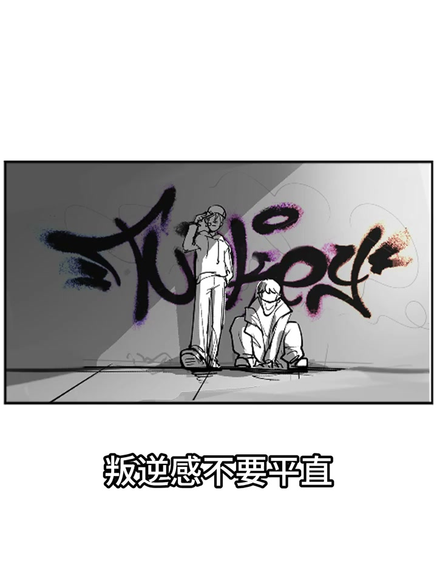
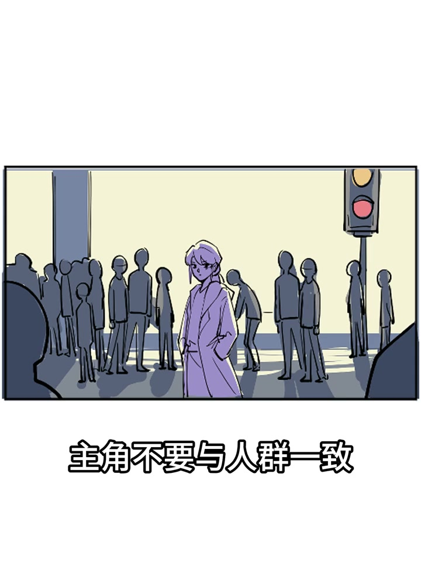
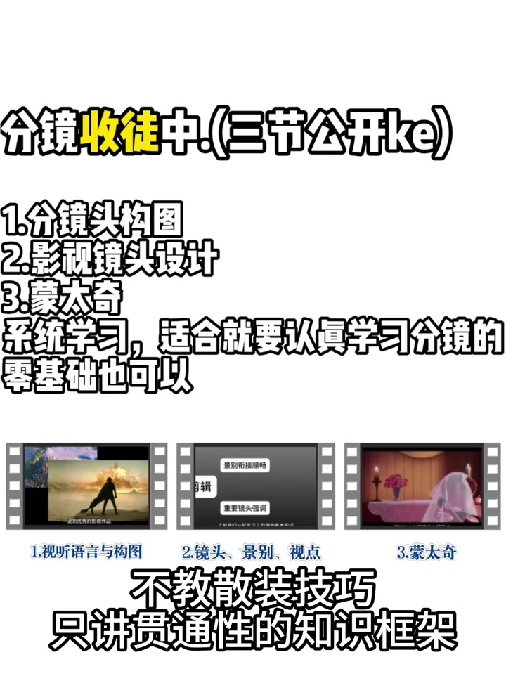

01
中文
很多人认为电影感只能靠后期调色实现。
EN
Many think the cinematic look only comes from color grading.
表达提示cinematic look（电影感）

Scene English · 分镜 · 电影感构图
Storyboard Tips: Cinematic Composition
🎧 语音讲解
Cinematic Feel Comes from Composition
情境很多人以为电影感靠后期调色，其实拍摄时的景别、角度、前景、引导线才是基础。
很多人认为电影感只能靠后期调色实现。
Many think the cinematic look only comes from color grading.
表达提示cinematic look（电影感）
实际上，电影画面之所以好看，来自拍摄时的构图。
In fact, film frames look great because of composition at capture time.
表达提示composition at capture（拍摄构图）
景别、角度、前景、引导线，是后期调色无法创造的结构性美感。
Shot size, angle, foreground, and leading lines are structural beauty grading can't create.
表达提示structural beauty（结构性美感）
先学构图，再谈调色。
Learn composition first, then talk about color.
表达提示composition first（先学构图）
cinematic look（电影感
structural beauty（结构性美感

Four Core Techniques
情境景别定信息、引导线引视线、前景增深度、留白给呼吸。
远景定氛围、全景定关系、中景定动作、近景定情绪、特写定细节。
Wide sets mood, full sets relationships, medium sets action, close sets emotion, and extreme close-up sets detail.
表达提示shot sizes（景别）
光影线条将观众视线引向主体。
Light and line lead the viewer's eye to the subject.
表达提示leading lines（引导线）
在前景放置虚化的物体，比如树叶、手臂，增加空间深度。
Place a blurred object in the foreground—leaves or an arm—to add depth.
表达提示foreground blur（前景虚化）
给画面呼吸的空间，不要在人物周围塞满东西。
Give the frame room to breathe; don't cram things around the subject.
表达提示room to breathe（呼吸空间）
shot sizes（景别
leading lines（引导线

Information Progression
情境同一个场景至少拍三个景别，后期选择最好的；让人物站在引导线终点。
同一个场景至少拍三个景别，后期选择最好的。
Shoot at least three shot sizes of the same scene, then pick the best.
表达提示three shot sizes（三个景别）
在拍摄环境里寻找引导线：道路、栏杆、光影。
Find leading lines in the environment: roads, railings, light and shadow.
表达提示roads and railings（道路与栏杆）
让人物站在引导线的终点。
Place the subject at the end of the leading line.
表达提示at the end of the line（引导线终点）
每次拍摄找一个可以当前景的物体，放在镜头边缘制造层次。
Each shot, find a foreground object at the frame edge to build layers.
表达提示frame-edge object（边缘前景）
练习留白构图：让人物偏在画面一侧，另一侧大面积留空。
Practice negative space: put the subject to one side and leave the rest open.
表达提示negative space（留白）
three shot sizes（三个景别
roads and railings（道路与栏杆

Common Pitfalls
情境所有镜头用同一景别、引导线把人引出画面、前景太清晰抢风头，都是常见问题。
所有镜头用同一个景别，会让后期没有选择。
Using one shot size everywhere leaves no choice in post.
表达提示one shot size（单一景别）
引导线应该指向主体，而不是指向画面外。
Leading lines should point to the subject, not out of the frame.
表达提示point to the subject（指向主体）
前景太清晰会抢了主体的风头，前景应该适度虚化。
An over-sharp foreground steals the show—it should be softly blurred.
表达提示softly blurred（适度虚化）
留白服务于构图，而不是为了留白而留白。
Negative space serves the composition—not the reverse.
表达提示serve the composition（服务于构图）
one shot size（单一景别
softly blurred（适度虚化

Composition Is the Art of Subtraction
情境构图是工具不是教条，有时打破规则反而有惊喜；适合短片与人物拍摄。
构图是工具不是教条，有时候故意打破规则反而有惊喜。
Composition is a tool, not a dogma—sometimes breaking rules surprises.
表达提示break the rules（打破规则）
构图是做减法的艺术，不是把所有东西都放进画面。
Composition is subtraction, not cramming everything into the frame.
表达提示art of subtraction（减法的艺术）
适合短片、人物拍摄等需要画面美感的视频。
It suits short films and character shoots that need visual beauty.
表达提示visual beauty（画面美感）
极限运动和新闻抓拍空间有限，来不及构图。
Extreme sports and news grabs leave no room for composition.
表达提示no room to compose（来不及构图）
break the rules（打破规则
art of subtraction（减法的艺术
说构图先行
说四个核心
说一拍三景别
说引导线终点
说留白呼吸
构图先于调色。
景别要有层次。
引导线指向主体。
前景要适度虚化。
留白服务构图。